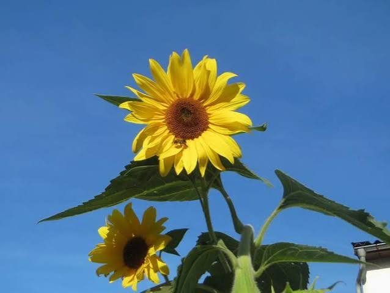

The sunflower is a tall, bright annual plant in the daisy family known for its large, sun-like flower heads and edible seeds.
Sunflowers are native to North America and are widely cultivated for their seeds, which are a source of oil, and for ornamental purposes.
Sunflowers need 6 to 8 hours of direct sunlight every day to grow strong and healthy.
They prefer well-drained soil and do not tolerate waterlogged conditions.
Sunflowers typically bloom in mid-summer through early fall, usually starting around July and August
More about Sunflowers